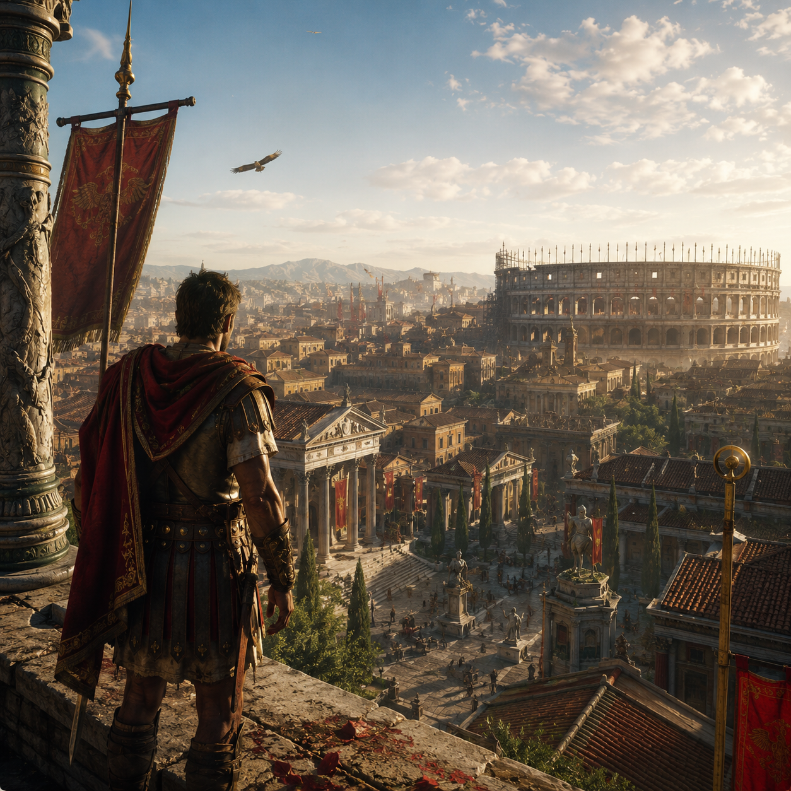

Featured
Hero reveal card.
Full-width hero
A panoramic 21:9 reveal card spanning the full content width, outside any grid.
<ui-reveal> is a CSS-only reveal card built on native <details> and <summary>.
The front face lives in <summary>, revealed content in ::details-content.
to="viewport"Tap a game to expand the card from its tile into a full-screen page, with a bouncy morph where supported. Tap the icon to close.
Gather your party and chase the falling stars. A hand-drawn action-RPG set across the floating isles of Auralis, where every comet leaves behind a creature to befriend — or battle.
Master the Starbind combat system, evolve your companions through dozens of forms, and uncover who shattered the night sky. Couch co-op for up to four heroes.
Ride into a frontier that remembers everything you do. Rob the noon stage or marshal the town that hangs you for it — every choice ripples through a living West of dust, debt and gunsmoke.
Tame wild horses, build your gang, and survive a dynamic bounty system where your reputation precedes you into every saloon. Online posses or solo drifter.

From a single cohort to the eternal city. Command Rome's legions across a campaign that spans the Republic to the Empire — march, besiege and intrigue your way to a throne history won't forget.
Real-time battles of thousands, a Senate that schemes behind your back, and city-building that turns marble quarries into wonders. Cross-play campaigns for up to eight consuls.
A panoramic 21:9 reveal card spanning the full content width, outside any grid.

Square media, no content-area in the summary.

Portrait media.
Widescreen media.

Content top-left over media. This panel has scroll set, so its height is locked to the closed card and a longer text scrolls inside instead of growing the card.
The Lure formed in the long shadow of post-punk, trading jangle for reverb and dread. Their early demos circulated on hand-dubbed cassettes passed between basement shows.
By the second record the sound had thickened — drum machines under live toms, a baritone guitar tuned down until the strings flapped, vocals buried like a confession you weren't meant to hear.
Critics called it funereal. The band called it honest. Either way the room went quiet when the first chord landed, and stayed that way until the lights came up.
This paragraph exists only to overflow the frame, proving the scrollbar appears and the card keeps its 1/1 aspect-ratio regardless of content length.
Content top-center over media.
Content top-right over media.
Content center-left over media.
Content centered over media, radial scrim.
Content center-right over media.
Content bottom-left over media.
Content bottom-center over media.
Content bottom-right over media.
No <ui-icon> — the entire card is the toggle, front and back. Interactive content in the panel (links, buttons) still works.
Flip direction follows from: these three flip in from left, top and bottom (default is right).
Click anywhere on the back to flip home.
Media-only face — the image alt is the accessible name.
Media above content (default).
Content above media.
Media left, content right.
Content left, media right.
The card gets iOS-style squircle corners via CSS corner-shape (icons stay circles). Pick a size with sq(sm), sq(md), sq(lg) or sq(xl) — each sets a matching radius and curvature together (exponent climbs with size so larger corners stay squircle, not blob). Unsupported browsers fall back to regular rounding.
20px radius, exponent 1.5.
The morph panel grows into the squircle card shape.
56px radius, exponent 2 — largest squircle.